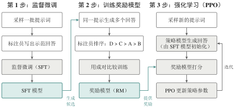
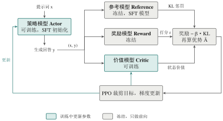

3.8 对齐：让回答符合人的期望
指令微调后的模型已经会按指令做事，但它只会模仿示范回答，不知道什么样的回答“不好”，也可能一本正经地编造事实。怎样让它的回答更有帮助、更诚实、更无害？本节先说明为什么需要对齐，再讲经典的 RLHF——人类排序、训练奖励模型、用 PPO 做强化学习——然后讲把它简化为一步监督学习的 DPO、用 AI 代替人工反馈的 RLAIF，以及用规则验证代替偏好的 RLVR 与 GRPO。结论是：对齐方法的共同点是“让模型生成多个回答，再根据对这些回答的评价来学习”；它们的差别在于评价从哪里来、需要几个模型同时参与训练。
3.8.1 为什么需要对齐
仅有 SFT 还不够，原因有三。高质量回答的获取成本高：SFT 需要大量指令及其标准回答，撰写成本高；对开放式问题，人很难写出“最好”的回答，却很容易判断两个回答中“哪个更好”。模仿不等于理解偏好：SFT 让模型模仿示范，但不告诉它什么回答是不好的，面对自然语言的多样性和指令的细微变化，表现仍不够稳健。存在幻觉和有害输出：模型参数庞大、语料复杂，行为难以预测，可能产生幻觉（一本正经地编造事实，现象与成因见第 2.4.7 小节）或有害内容；模型越强、应用越广、与用户互动越频繁，后果越严重。
因此需要让模型的输出与人类的价值观和意图对齐（alignment）。一个广泛采用的标准是 3H 原则：有帮助（Helpful），理解用户的真实意图，给出有用的回答；诚实（Honest，也译真实性），提供真实信息，不编造，不确定时坦承不知道；无害（Harmless），不输出歧视性、危险或违法的内容。对齐方法的共同特点是：不再依赖人工写的标准回答，而是让模型生成多个回答，根据人类（或 AI、或规则）对这些回答的评价来学习。这特别适合答案开放、没有唯一标准答案的生成任务。
3.8.2 基于人类反馈的强化学习（RLHF）
基于人类反馈的强化学习（Reinforcement Learning from Human Feedback，RLHF）是最早大规模应用的对齐方法，OpenAI 在 2022 年的 InstructGPT 中系统描述了这一流程[38]，ChatGPT 也采用了类似的方法。如图 3-17，它分三步：
监督微调：用人工撰写的示范数据对预训练模型做 SFT，得到初始策略（第 3.6 节）；
训练奖励模型：让 SFT 模型对同一问题生成多个回答，由标注员排序，用这些偏好数据训练一个给回答打分的奖励模型；
强化学习：以奖励模型的打分为奖励信号，用近端策略优化（PPO）继续训练语言模型，让它生成得分更高的回答。
也有资料把 RLHF 说成“奖励模型训练 + 近端策略优化”两步，那是把 SFT 视为前置步骤、不计在内，两种说法指的是同一流程。InstructGPT 的人类评估显示，经过 RLHF 的 13 亿参数模型，回答比未经对齐的 1750 亿参数 GPT-3 更受偏好：对齐带来的提升不只是锦上添花。

图 3-17 RLHF 的三个步骤[38]。蓝色箭头表示上一步的产物被下一步使用：SFT 模型为第 2 步生成候选回答，奖励模型为第 3 步提供奖励信号（第 3 步的策略模型同样由 SFT 模型初始化）
3.8.3 奖励模型
作用与结构 奖励模型（Reward Model，RM）的思想来自强化学习的奖励函数：对当前状态给出一个分数，说明它的价值有多大。在大语言模型中，奖励模型的输入是一个问题和一个回答，输出一个标量分数，回答越符合人类偏好，分数越高。它相当于一个“自动化的人类评委”，可以源源不断地为强化学习提供奖励信号。奖励模型同样是 Transformer，通常由 SFT 模型初始化：去掉最后预测词表概率的输出层（及其后的 softmax），换成一个输出单个数值的线性层。这样无论输入什么文本，它都在序列最后一个 token 处输出一个标量 \(r_\phi(x,y)\)，\(\phi\) 是奖励模型的参数。
训练数据与损失 为什么让标注员排序而不是直接打分？不同人对“7 分”和“8 分”的理解差异很大，而对“A 比 B 好”的判断基本一致，排序减少了人为误差。训练数据由成对比较组成：对同一问题 \(x\)，有一个更受偏好的回答 \(y_w\) 和一个较差的回答 \(y_l\)。标注员对 \(K\) 个回答排序后，可以得到 \(\binom{K}{2}\) 个比较对（InstructGPT 中 \(K\) 取 4～9）。奖励模型用成对排序损失（pairwise ranking loss）训练： \[\mathcal{L}_{\mathrm{RM}}(\phi)=-\mathbb{E}_{(x,y_w,y_l)\sim\mathcal{D}}\Bigl[\log\sigma\bigl(r_\phi(x,y_w)-r_\phi(x,y_l)\bigr)\Bigr], \tag{3-28}\] \(\sigma(z)=1/(1+e^{-z})\) 是 sigmoid 函数，把两个回答的分数差映射为 0 到 1 之间的概率，表示“\(y_w\) 优于 \(y_l\)”的可能性。分数差越大，概率越接近 1，损失越接近 0；如果奖励模型给较差的回答打了更高的分，分数差为负，损失就很大。这一形式来自描述成对比较的 Bradley–Terry 模型。
梯度分析 这个损失为什么能把排序学对？记 \(\Delta=r_\phi(x,y_w)-r_\phi(x,y_l)\)，单个样本的损失是 \(-\log\sigma(\Delta)\)。由 \(\sigma'(z)=\sigma(z)\bigl(1-\sigma(z)\bigr)\)， \[\frac{\partial}{\partial\Delta}\bigl[-\log\sigma(\Delta)\bigr]=-\frac{\sigma'(\Delta)}{\sigma(\Delta)}=-\bigl(1-\sigma(\Delta)\bigr).\] 再按链式法则，\(\Delta\) 对 \(r_\phi(x,y_w)\) 的导数是 \(+1\)、对 \(r_\phi(x,y_l)\) 的导数是 \(-1\)，所以损失对较好回答分数的梯度为 \(-\bigl(1-\sigma(\Delta)\bigr)\)，对较差回答分数的梯度为 \(+\bigl(1-\sigma(\Delta)\bigr)\)。梯度下降因此会抬高 \(y_w\) 的分数、压低 \(y_l\) 的分数，两边用力一样大，大小都是 \(1-\sigma(\Delta)\)。这个系数就是模型当前判断“\(y_l\) 更好”的概率，即错判的概率：已经分对且差距很大时，\(\Delta\gg0\)，系数接近 0，几乎不再更新；排错的样本 \(\Delta<0\)，系数接近 1，梯度最大。训练就这样把力气自动用在还没学会的比较对上。另外，损失只依赖分数之差，给两个分数同时加上同一个常数不改变损失，所以奖励模型的绝对分数没有意义，只有相对大小有意义。
例 3-8 奖励模型损失与梯度
一个奖励模型对三组回答打分，每组中 \(y_w\) 是标注员选出的较好回答：A 组 \((r_w,r_l)=(2.0,\,0.5)\)，B 组 \((0.3,\,0.1)\)，C 组 \((-0.5,\,1.0)\)。求每组的 \(\sigma(\Delta)\)、损失和梯度大小，以及这批样本的平均损失。
1 & 分数差 \(\Delta\) & \(2.0-0.5\)；\(0.3-0.1\)；\(-0.5-1.0\) & 1.5；0.2；\(-1.5\) & \(\Delta=r_w-r_l\)，C 组把较差的回答排在了前面
2 & \(\sigma(\Delta)\) & \(1/(1+e^{-1.5})\) 等 & 0.818；0.550；0.182 & sigmoid；\(e^{-1.5}\approx0.223\)，\(e^{-0.2}\approx0.819\)
3 & 损失 & \(-\ln\sigma(\Delta)\) & 0.201；0.598；1.701 & 式 （3-28），用未四舍五入的 \(\sigma\) 计算
4 & 梯度大小 & \(1-\sigma(\Delta)\) & 0.182；0.450；0.818 & 梯度分析中的系数，对 \(r_w\) 取负号、对 \(r_l\) 取正号
5 & 平均损失 & \((0.201+0.598+1.701)\div3\) & 0.834 & 式 （3-28） 中的期望用样本均值代替；用未四舍五入的损失计算
数据流向两个分数 → 求差 \(\Delta\) → \(\sigma(\Delta)\) → 取 \(-\ln\) 得损失，取 \(1-\sigma\) 得梯度大小。 A 组已经分对且差距大，梯度只有 0.182；C 组排错，梯度是 A 组的 4.5 倍（\(0.818\div0.182\)）；B 组差距很小，\(\sigma\) 接近 0.5，损失和梯度都处于中间。平均损失主要来自排错的 C 组（1.701 占三项之和的约 68%）。
数据集 奖励模型数据主要围绕有用性和无害性收集：有用性依赖标注者的判断，他们的偏好排序是主要标准；无害性则既要收集正面的安全回答，也要收集用于负面增强的有害示例。为提高效率，可以先让大模型生成候选回答，再由标注者判别和选择。开源偏好数据集有 OpenAI 针对摘要任务的 Summarize from Feedback、针对 WebGPT 的人类比较数据，Anthropic 的有用性与无害性数据集 HH-RLHF，以及斯坦福的 SHP（Stanford Human Preferences）等。
辨析
有用性与无害性常常冲突。过度追求无害，模型会对正常的医学、安全问题也一概回答“我无法提供帮助”，安全却无用；过度强调有用，模型又可能有求必应，输出危险内容。好的对齐要在二者之间找到平衡，这至今仍是对齐研究的核心难题之一。
3.8.4 近端策略优化（PPO）
把文本生成看作强化学习 有了奖励模型，就可以用强化学习继续优化语言模型。各基本要素的含义如下：
策略（policy）：就是语言模型本身，记为 \(\pi_\theta\)，接收提示词，输出一串文本（或文本的概率分布）；
状态（state）：提示词加上已生成的部分 \(s_t=(x,y_{<t})\)；所有可能的状态构成观察空间，即由词表中的 token 组成的所有可能的变长序列，规模随长度指数增长；
动作（action）：每一步从词表中选出下一个 token \(a_t=y_t\)；动作空间就是词表（含结束符），一个完整回答是一串动作组成的变长 token 序列；
奖励（reward）：回答生成完后由奖励模型打分，再配合策略层面的约束（如下文的 KL 惩罚）得到最终奖励。
初始策略采用 SFT 后的模型；训练数据只需一批提示词（Prompt 集），不需要标注。对每个提示词，由当前策略生成回答，再把问题和回答送入奖励模型打分，训练目标是让生成的文本在奖励模型上得分尽可能高。
带 KL 惩罚的目标 如果一味追求奖励模型的高分，策略很快会找到奖励模型的“漏洞”：奖励模型偏爱长回答，策略就生成冗长空洞的内容，甚至生成人看来毫无意义却能骗取高分的文本。这种现象称为奖励作弊（reward hacking）。为此，RLHF 在目标中加入 KL 散度惩罚，约束策略不要偏离初始的 SFT 模型（称为参考模型 \(\pi_{\mathrm{ref}}\)）太远： \[\max_{\pi_\theta}\ \mathbb{E}_{x\sim\mathcal{D},\,y\sim\pi_\theta(\cdot\mid x)}\bigl[r_\phi(x,y)\bigr]-\beta\,\mathbb{D}_{\mathrm{KL}}\bigl[\pi_\theta(y\mid x)\,\Vert\,\pi_{\mathrm{ref}}(y\mid x)\bigr], \tag{3-29}\] \(\beta\) 控制约束强度：KL 惩罚让策略不至于偏离参考模型太远，从而缓解奖励作弊、维持语言的流畅；\(\beta\) 过大则会限制模型的改进空间。
PPO 的裁剪目标 近端策略优化（Proximal Policy Optimization，PPO）[39]是一种深度强化学习算法，用于训练智能体在与环境的交互中最大化累积回报；在这里，智能体就是要优化的语言模型。它的核心思想是：每次更新不要让新策略与旧策略相差太大，以保证训练稳定。定义新旧策略在同一动作上的概率比 \[\rho_t(\theta)=\frac{\pi_\theta(a_t\mid s_t)}{\pi_{\theta_{\mathrm{old}}}(a_t\mid s_t)}, \tag{3-30}\] 并最大化裁剪后的目标 \[\mathcal{L}^{\mathrm{CLIP}}(\theta)=\mathbb{E}_t\Bigl[\min\bigl(\rho_t(\theta)\hat{A}_t,\ \mathrm{clip}(\rho_t(\theta),1-\epsilon,1+\epsilon)\,\hat{A}_t\bigr)\Bigr], \tag{3-31}\] \(\hat{A}_t\) 是优势函数的估计，表示在状态 \(s_t\) 选择动作 \(a_t\) 比“平均水平”好多少；\(\epsilon\) 通常取 0.2。裁剪的作用是：概率比偏离 1 太多时，不再沿该方向继续增大更新，避免策略一步变化过大。这个目标对参数 \(\theta\) 求梯度后，仍用随机梯度下降类的优化器（如 AdamW）更新。
四个模型 如图 3-18，用 PPO 做 RLHF 要同时用到四个模型：策略模型（Actor，可训练，SFT 初始化）、参考模型（Reference，冻结的 SFT 模型，算 KL 惩罚）、奖励模型（Reward，冻结，打分）和价值模型（Critic，可训练，估计每个状态的期望回报，用于计算优势 \(\hat{A}_t\)）。四个模型规模相近，其中两个还要训练，显存和计算开销很大；加上强化学习对超参数敏感，RLHF 的工程实现相当复杂，这促使研究者寻找更简单的方案。

图 3-18 用 PPO 做 RLHF 时同时用到的四个模型。策略模型生成回答；参考模型用于计算 KL 惩罚，奖励模型给回答打分，价值模型估计状态价值以计算优势；PPO 据此更新策略模型和价值模型
3.8.5 直接偏好优化（DPO）
直接偏好优化（Direct Preference Optimization，DPO）由 Rafailov 等人于 2023 年提出[40]。它的关键发现是：式 （3-29） 的优化问题有解析解，由此可以把“奖励”用策略模型自身的概率表示出来，从而跳过训练奖励模型和强化学习，直接用偏好数据优化语言模型。损失函数为 \[\mathcal{L}_{\mathrm{DPO}}(\theta)=-\mathbb{E}_{(x,y_w,y_l)\sim\mathcal{D}}\Bigl[\log\sigma\Bigl(\beta\log\frac{\pi_\theta(y_w\mid x)}{\pi_{\mathrm{ref}}(y_w\mid x)}-\beta\log\frac{\pi_\theta(y_l\mid x)}{\pi_{\mathrm{ref}}(y_l\mid x)}\Bigr)\Bigr]. \tag{3-32}\] 与式 （3-28） 对比可以看出，DPO 把 \(\beta\log\frac{\pi_\theta(y\mid x)}{\pi_{\mathrm{ref}}(y\mid x)}\) 当作“隐式奖励”：训练让模型提高偏好回答 \(y_w\) 相对于参考模型的概率，同时降低较差回答 \(y_l\) 的相对概率。
与 PPO 相比，DPO 流程简单——不需要单独训练奖励模型，也不需要在训练中采样生成回答，训练过程和 SFT 一样是普通的监督学习；资源开销小——只需策略模型和参考模型两个模型，其中参考模型冻结，它对训练集中各回答的概率还可以预先算好；训练稳定——没有强化学习那样复杂的超参数。因此 DPO 及其变体在开源社区广泛使用。也有研究表明，在一些复杂任务上，精心调优的 PPO 仍有优势，两类方法各有适用场景。
3.8.6 基于 AI 反馈的强化学习（RLAIF）
人工标注偏好成本高、速度慢，标注员本身的偏见和不一致也影响质量。基于 AI 反馈的强化学习（Reinforcement Learning from AI Feedback，RLAIF）用能力较强的 AI 模型代替人提供偏好判断：给它一组明确的评判原则，让它比较两个回答的优劣，再用这些 AI 偏好训练奖励模型或直接做 DPO。Anthropic 于 2022 年提出的 Constitutional AI（宪法式 AI）是代表[41]：研究者先写下一组原则（“宪法”），让模型依据原则批评和修改自己的回答，再用 AI 依据原则做出的偏好判断进行强化学习，在很少人工标注的情况下提升了无害性。Google 的研究也表明，在摘要等任务上 RLAIF 可以达到与 RLHF 相当的效果。RLAIF 大幅降低了数据成本，但 AI 评判者自身的偏差可能被放大，仍需人工抽检。
3.8.7 基于可验证奖励的强化学习与推理模型
上述方法的奖励都来自“偏好”，而偏好是主观的、可能出错的。对数学、编程这类答案可以客观验证的任务，可以直接用规则计算奖励：最终答案是否正确，代码能否通过测试用例。这类方法称为基于可验证奖励的强化学习（Reinforcement Learning with Verifiable Rewards，RLVR）[42]。奖励来自客观验证，而不是可能被钻空子的奖励模型，能有效缓解奖励作弊。
组相对策略优化（Group Relative Policy Optimization，GRPO）由 DeepSeek 在 2024 年提出[43]，它进一步简化了 PPO：对每个问题让模型一次生成 \(G\) 个回答，分别得到奖励 \(r_1,\dots,r_G\)，用组内的相对表现作为优势： \[\hat{A}_i=\frac{r_i-\mathrm{mean}(r_1,\dots,r_G)}{\mathrm{std}(r_1,\dots,r_G)}, \tag{3-33}\] 即“比同组平均水平好多少”。这样不再需要单独训练价值模型，显存和计算开销明显下降。
2024 年以来，OpenAI 的 o1、DeepSeek-R1 等推理模型（reasoning model）的出现，使后训练的重心从“对齐偏好”扩展到“提升推理能力”。DeepSeek-R1 的技术报告显示[44]，其中的 R1-Zero 直接在基础模型上、仅用答案正确性和格式规范两类规则奖励，配合 GRPO 做大规模强化学习，模型就自发学会了生成很长的思维链、反思并修正错误；正式发布的 R1 还在强化学习前后加入了少量冷启动 SFT 数据等步骤，以改善可读性。这类模型在回答前先“思考”较长时间，用更多的推理计算换取更高的准确率，称为测试时计算扩展（test-time compute scaling）。截至 2026 年 11 月，主流的前沿模型大多提供这种“思考”模式。它也意味着推理阶段生成的 token 数大幅增加，第 3.9 节以后讨论的推理效率问题更加重要。
表 3-12 比较了几种对齐方法。
表 3-12 几种对齐方法的比较
| 方法 | 反馈来源 | 单独的奖励模型 | 训练时的模型 | 特点 |
|---|---|---|---|---|
| RLHF（PPO） | 人类偏好 | 需要 | 策略、参考、奖励、价值 4 个 | 经过大规模验证；实现复杂、开销大 |
| DPO | 人类或 AI 偏好 | 不需要（隐式奖励） | 策略、参考 2 个 | 简单稳定，如同监督学习 |
| RLAIF | AI 偏好 | 视实现而定 | 视实现而定 | 大幅降低标注成本；要防止偏差放大 |
| GRPO + 可验证奖励 | 规则验证 | 不需要（规则打分） | 策略、参考 2 个 | 适合数学、代码等可验证任务；能激发推理能力 |
辨析
SFT 与 RLHF 的区别不在于“是否用了人工数据”——两者都用。SFT 的监督信号是标准回答，模型学的是“照着写”；RLHF 的监督信号是对模型自己生成的回答的比较评价，模型学的是“什么更好”。前者需要人会写最好的答案，后者只需要人能分辨好坏。
本节要点
RLHF = SFT → 奖励模型（成对排序损失）→ PPO（KL 惩罚 + 裁剪），需要 4 个模型。
DPO 用偏好对构造的损失直接优化策略，跳过奖励模型和 PPO 的采样循环，训练形式与监督学习相同，只需 2 个模型；RLAIF 用 AI 代替人工标注偏好。
RLVR 用规则验证给奖励，GRPO 用组内相对奖励代替价值模型，推动了推理模型的发展。
案例进度：课程问答模型用 5000 对“引导思路 vs 直接给答案”的偏好数据做 DPO，单卡 LoRA 完成。